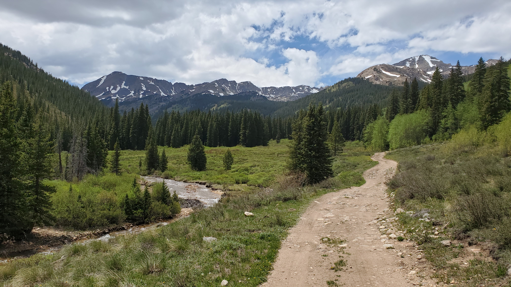

La Plata Peak
La Plata Peak is the fifth-highest summit of the Rocky Mountains of North America and the U.S. state of Colorado.
La Plata is located in the Collegiate Peaks Wilderness of San Isabel National Forest, 22.7 miles northwest of the Town of Buena Vista in Chaffee County, Colorado.
There are two commonly used routes to climb the mountain. The route we selected is near Winfield, to the south of the peak, and is approximatly 7 miles round trip.
/p>
The Night Before
We drove in Friday afternoon and setup camp a few hundred yards from the trail head. Our plan was to start our hike around 5:30am, the forecast called for thunderstorms in the early afternoon
and we wanted to have camp packed up before the storms came in.

Early Morning
We started the hike shortly after 5:30 am. There was a light mist at the trail head but the clouds appeared to be clearing.

The First Mile
As the sun came out the air cleared but the clouds remained. The temperature was about 50° fahrenheit and we were making good time.

Above the Tree Line
As we cleared the tree line the air became thinner and the mist returned. As we gained elevation the temperature dropped and the mist turned to a light rain.


Approaching the Summit
After reaching the first false summit the rain turned to snow and the temperature dropped to about 25° fahrenheit. The wind had also picked up making our climb that much more challenging.
We expected the temperature to drop as we gained elevation but we were not prepared for the rain and snow. Most of us didn't have gloves and only had a windbreaker and shorts to protect us from the elements.
We passed a few people who had reached the summit. They said the conditions appeared to be improving at the top but visibility was only about 50 feet.


Summit
As we reached the summit the clouds started to dissappear, the sun came out and the conditions improved. The views were worth it.